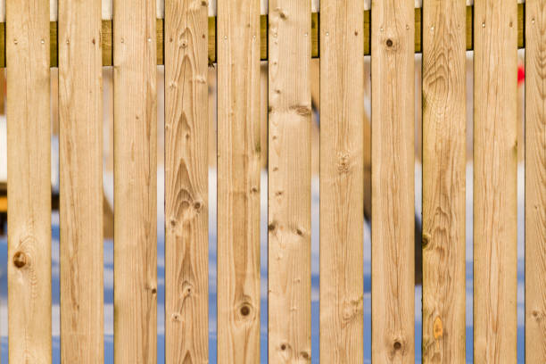
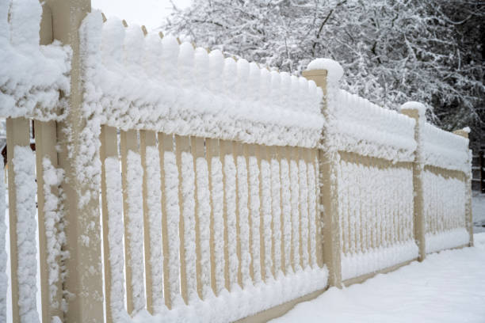
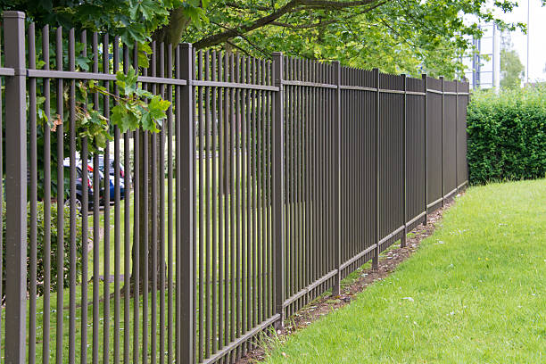

Lake Placid New York
info@superiorfenceandrail.pro
Lake Placid New York
info@superiorfenceandrail.pro

Transform your Lake Placid New York yard with custom fencing solutions. From decorative to privacy fences, we deliver superior craftsmanship and unmatched customer satisfaction. Contact us for your free estimate now!
Click Here To Call Us (877) 848-1711Are you searching for reliable fence services in Lake Placid New York ? Our company specializes in delivering professional fence installation and repair services tailored to meet your specific needs. Whether you want to enhance privacy, improve security, or add aesthetic appeal to your property, we have the expertise to deliver exceptional results.
We offer a wide range of fencing solutions, including wood, vinyl, chain-link, aluminum, and wrought iron fences. Each type of fence is designed to serve unique purposes, from durable chain-link fences for security to elegant vinyl or wood fences for a polished, classic look. Our team uses premium materials and cutting-edge techniques to ensure your fence stands strong against time and weather conditions in Lake Placid New York .
What sets us apart? Our commitment to customer satisfaction and quality craftsmanship. We pride ourselves on offering competitive pricing, timely project completion, and personalized service to ensure your expectations are exceeded. From backyard fences for homes to large-scale commercial projects, no job is too big or small for us.
Protect your property and boost its curb appeal with a sturdy, well-crafted fence. Contact us today for a free consultation and quote! Let us be your trusted fencing partner in Lake Placid New York .
Residential & commercial Fences
Quality services at affordable prices
Immediate 24/ 7 emergency services


Are you searching for expert fence installation services in Lake Placid New York ? Look no further! Our team specializes in delivering high-quality fencing solutions tailored to meet your specific needs. Whether you’re enhancing privacy, boosting security, or elevating curb appeal, we’ve got you covered.
With years of experience in the fencing industry, we provide a wide range of options, including wooden fences, vinyl fences, chain-link fences, and ornamental iron fences. Each installation is carried out using durable materials to ensure long-lasting performance, even in challenging weather conditions. Our skilled professionals pay meticulous attention to detail, ensuring every fence is installed perfectly to align with your property’s layout.
What sets us apart is our commitment to customer satisfaction. From the initial consultation to the final installation, we work closely with you to understand your vision and bring it to life. We also offer competitive pricing without compromising quality, making us the go-to choice for fence installation in Lake Placid New York .
Whether you need a fence for your residential property or a large commercial project, trust us to deliver results that exceed expectations. Contact us today to schedule your free consultation and transform your outdoor spaces with expertly installed fences in Lake Placid New York .
Residential & commercial Fences
Quality services at affordable prices
Immediate 24/ 7 emergency services
For a high level of security that is both effective and flexible, electric fencing is an excellent option. Our electric fencing installation services provide a solution that deters intruders while being easy to manage. Whether for residential use, commercial properties, or farmland, electric fencing can be customized to fit your needs. Our team is knowledgeable about local regulations and safety measures, ensuring that your system is compliant and effective. Choose us for our commitment to superior technology and quality service that enhances your property’s security.

Bamboo fencing is a splendid choice for those looking to add a unique and natural aesthetic to their property. At Fences, we specialize in bamboo fence installation that combines beauty and sustainability.
Bamboo is a renewable resource known for its strength and flexibility, making it an excellent choice for fencing. Our bamboo fences can provide privacy, enhance your landscape's beauty, and contribute to an environmentally friendly footprint.
Our team works closely with you to ensure that your bamboo fence meets your design and functionality needs. We handle everything from design to installation, ensuring a seamless process that leaves you with a standout feature for your property.
If you’re interested in adding eco-friendly charm to your property trust Fences to provide expert bamboo fence installation that exceeds your expectations. Elevate your outdoor spaces with our beautiful bamboo solutions while embracing sustainable practices.

Wrought iron fencing offers elegance and timelessness to any property, but it requires proper care to maintain its beauty and integrity. At Fences, we specialize in wrought iron fence restoration and installation, ensuring your property stands out while remaining secure.
Our restoration services breathe new life into rusty or damaged fences. We understand the techniques needed to repair and enhance wrought iron fences, preserving their classic look while also reinforcing their strength. When you choose us, you receive expertise and attention to detail that guarantees high-quality results.
For those seeking new installations, we offer a variety of designs, allowing you to select a wrought iron fence that fits perfectly with your existing landscape. Our custom installations are designed to complement your home or business while providing security.
Choose Fences for wrought iron fence restoration and installation in Lake Placid New York . Join our satisfied customers who have trusted us to enhance their properties with our stylish and durable wrought iron fencing solutions.

Every property has unique needs, and a one-size-fits-all approach to fencing simply won’t do. At Fences, we specialize in custom fence design and build services that cater to your specific requirements and aesthetic preferences.
Our design team will work closely with you to understand your vision, offering professional insights and expert recommendations on materials and styles that fit your needs. Whether you desire modern fencing, traditional looks, or an eco-friendly option, we will create a solution tailored just for you.
Our skilled builders employ quality craftsmanship and meticulous attention to detail during the installation process, ensuring your custom fence not only looks amazing but functions perfectly for years to come.
Trust Fences for your custom fence projects . Join our portfolio of satisfied clients who have brought their unique fencing visions to life. Your dream fence is just a consultation away.

Keeping horses and livestock secure is crucial for their safety and your peace of mind. Our horse and livestock fencing services offer solutions tailored to rural properties that prioritize both security and aesthetic appeal. With materials ranging from wood to high-tensile wire, we create fencing designed to contain livestock effectively without compromising their welfare. Our experienced team understands the nuances of livestock behavior and will ensure fencing meets your specific needs. Choose us for expert advice and high-quality installation, ensuring your animals remain safe and secure.
Enhance the beauty of your garden or landscape with decorative fencing solutions from Fences. Our garden and landscape fencing options not only improve aesthetics but also protect your plants from unwanted intrusions.
Whether you prefer charming picket fences, decorative wrought iron, or low-maintenance vinyl, we've got options that will perfectly suit your landscaping style. Our team is experienced in creating customized solutions that fit your property’s design and layout.
When you choose us, you can expect quality materials and professional installation that adapts to your unique garden features. Fencing is crucial for defining borders while adding a touch of elegance to your outdoor space.
Get in touch with Fences for garden and landscape fencing . Let us help you create a beautiful and functional space that is as inviting as it is protective. Transform your garden into a visually stunning masterpiece with our expertly crafted fencing solutions.

Living in a noisy environment can be a challenge, and having a noise reduction fence can help create a more tranquil outdoor space. At Fences, we provide specialized noise reduction fencing solutions designed to shield your property from external sounds.
Our noise-reducing fences are crafted using materials optimized for sound attenuation, ensuring they effectively buffer noise from roads, neighbors, or other disturbances. We understand the importance of a peaceful living environment, and our team is dedicated to providing solutions that enhance your quality of life.
We work with you to design a fence that not only reduces noise but also complements your property’s aesthetic. Our professional installation ensures your noise reduction fence serves its purpose effectively, providing relief from unwanted sounds.
Choose Fences for noise reduction fencing . Join countless happy residents who have transformed their homes into peaceful retreats with our innovative fencing solutions. Let us help you regain your serenity.

For an elegant yet durable fencing option, ornamental steel fencing is the perfect solution for enhancing your property’s perimeter. At Fences, we specialize in ornamental steel fencing installation that combines beauty with strength.
Our ornamental steel fences come in a variety of designs, allowing you to create a fence that matches your property style while offering the security you need. The durability of steel ensures that your investment will withstand the test of time, requiring minimal maintenance over the years.
Our expert installation team is dedicated to delivering quality craftsmanship that exceeds industry standards. We work with each client to ensure that their unique design vision and practical needs are met.
Choosing Fences for ornamental steel fencing ensures that you receive a top-notch product and service. Join the many satisfied customers who have enhanced their properties with our beautiful ornamental steel solutions backed by a commitment to quality.

For maximum security and durability, stone and concrete fencing present the perfect solution for property owners . These robust materials are well-suited for both residential and commercial properties, providing a solid barrier against noise and unwanted intrusion. Our stone and concrete fencing services involve expert installation and design that considers aesthetics and functionality. With a commitment to using high-quality materials, we ensure your fencing will withstand the elements and provide long-lasting security. Trust us to deliver impressive results that enhance the integrity and safety of your property.
Years Experience
Expert Technicians
Satisfied Clients
Compleate Projects
At Superior Fence, we pride ourselves on being the premier fencing provider across all cities in Lake Placid New York . Whether you’re looking for residential, commercial, or custom fencing solutions, our team is committed to delivering top-quality results, exceptional customer service, and unmatched craftsmanship.
Our expert fence installers are experienced in working with a variety of materials, including wood, vinyl, chain-link, and wrought iron, ensuring that your fence is built to last while complementing the aesthetics of your property. We understand that every project is unique, which is why we offer personalized solutions tailored to your specific needs and budget.
What sets us apart from other fencing companies is our dedication to customer satisfaction. From the initial consultation to project completion, we prioritize clear communication, transparency, and reliability. Our team works efficiently to minimize disruption to your daily life while ensuring that your new fence is installed to the highest industry standards.
Superior Fence also stands behind our work with a strong warranty on both materials and labor, providing you with peace of mind for years to come. As a locally trusted company in Lake Placid New York we have built a solid reputation for being the go-to choice for all fencing projects.
Choose Superior Fence for your next fencing project in Lake Placid New York and experience the difference of working with a company that truly cares about quality and customer satisfaction.
In today's world, ensuring your personal space is free from the prying eyes of neighbors and passersby is essential. A privacy fence installation is more than just a boundary; it's an investment in your peace of mind. At Fences, we specialize in designing and installing high-quality privacy fences that perfectly suit your property and lifestyle. Our team understands that privacy is paramount, and we work diligently to create secure, enclosed outdoor spaces where you can relax, entertain, and enjoy your surroundings.
We offer a variety of materials for your privacy fence, including wood, vinyl, and composite options, each with unique benefits. Our experts will help you choose the right style that complements your home while ensuring maximum privacy. We also focus on durable construction, using only the best materials that withstand the test of time, weather, and wear.
What sets us apart from other fencing companies is our commitment to customer satisfaction. We take the time to understand your needs, collaborate on a design that works for you, and provide professional installation that adheres to local regulations. Our skilled team ensures that every fence we install not only looks great but stands strong against the elements.
Choosing us means choosing quality. We pride ourselves on our attention to detail and the beauty of our craftsmanship. Our fences not only enhance your property's aesthetic appeal but also add value to your home. With years of experience in privacy fence installation we have built a reputation for reliability, efficiency, and excellence.
Whether you're looking to block noise from a busy street or simply want to create a secluded outdoor retreat, our privacy fences are an ideal solution. Let's transform your outdoor space with a stunning privacy fence that offers protection, beauty, and peace of mind. Trust Fences for all your privacy fence installation needs—because your privacy matters.
Wooden fences provide a classic look and natural charm to any property. However, they can wear over time due to weather conditions prevalent . Our wooden fence repair services include everything from minor fixes to complete restorations, ensuring your fence is functional and beautiful. Additionally, if you're considering installing a new wooden fence, we offer custom designs that complement your property while providing security and privacy. Our skilled craftsmen are experienced in various wood types, ensuring that your fence will last for years to come. We take pride in our craftsmanship and dedication to customer satisfaction, making us your best choice for wooden fence services .
Vinyl fencing is becoming increasingly popular in Lake Placid New York due to its durability, low maintenance, and aesthetic flexibility. At Fences, we offer a comprehensive range of vinyl fencing services, from installation to repair and maintenance. Our vinyl fences provide a sleek and modern look that complements any property style, making them an ideal choice for homeowners who prioritize both beauty and practicality.
One of the significant advantages of vinyl fencing is its resistance to weathering and pests. Unlike wood, vinyl will not rot, warp, or splinter, giving you peace of mind for years to come. Our experienced team is committed to delivering flawless installation that ensures a secure and sturdy structure. We also provide ongoing maintenance services to keep your vinyl fence looking as good as new. With our extensive knowledge of vinyl fencing options, we help you choose colors and styles that will match your home perfectly. Trust Fences for your vinyl fencing solutions in Lake Placid New York and discover why we are the go-to experts in the area.
For an economical and practical fencing solution, chain-link fences are a popular choice for both residential and commercial properties . At Fences, we specialize in professional chain-link fence installation, offering robust security without compromising on visibility. Our chain-link fences are perfect for enclosing yards, securing business properties, and defining boundaries.
We use high-quality galvanized steel to ensure your fence is resilient and resistant to rust and corrosion. Understanding that each property has unique needs, we provide customizable options such as height, gauge, and coatings, allowing you to select the perfect fencing style for your requirements. Our installation process is thorough, ensuring that your fence is built according to industry standards while minimizing disruption to your property. Rely on Fences for your chain-link fencing needs and experience the quality and care that set us apart from the competition.
For those looking to combine security with elegance, decorative aluminum fencing is an ideal choice. At Fences, we offer premium aluminum fencing solutions designed to enhance the beauty of your property while providing the durability of traditional materials.
Our decorative aluminum fences come in a variety of styles and colors, allowing homeowners in Lake Placid New York to customize their outdoor spaces effortlessly. These fences are not only beautiful but also require minimal maintenance, making them a smart investment for any property owner.
Through our skilled installation services, we ensure that your fencing is secure and well-constructed, providing the peace of mind you deserve. Our knowledgeable team can guide you through the design and selection process, offering expert advice on how to best meet your fencing needs.
Choosing Fences means selecting a partner committed to your satisfaction. We understand the importance of first impressions, and the right decorative aluminum fence can elevate your property's curb appeal. Transform your outdoor spaces with us today.
The quintessential symbol of home and warmth, picket fences are a beloved choice for many homeowners in Lake Placid New York . At Fences, we specialize in picket fence installation that beautifully frames your property while providing the charm it deserves. Whether you are looking for classic white pickets or more modern designs and finishes, our team can bring your vision to life.
Picket fences are perfect for delineating your yard while maintaining an open feel. They enhance curb appeal and serve as functional barriers for pets and children. Using only the highest quality materials, we ensure that your picket fence is not only attractive but also durable and long-lasting. Our installation process is efficient and careful, respecting your space while delivering exceptional results. When you choose Fences for picket fence installation you’re choosing a team committed to quality and customer satisfaction.
Split rail fencing offers a rustic, charming solution for homeowners who desire an open, airy feel around their properties. Ideal for defining boundaries without creating a solid barrier, our split rail fence installations are perfect for farms, gardens, and large yards. They are particularly functional in rural settings and can be complemented with other fencing types for enhanced privacy and security. We carefully select high-quality materials to ensure longevity and resilience against outdoor elements. Our exceptional service and commitment to excellence set us apart as the preferred choice for split rail fencing in Lake Placid New York .
Proper maintenance is crucial to preserving the beauty and longevity of your fences. Fence staining and maintenance plays an essential role in protecting your investment and enhancing the appearance of your property. At Fences, we offer professional fence staining and maintenance services ensuring your fences look stunning year-round.
A well-stained fence not only improves its aesthetic appeal but also protects it from environmental damage, such as UV rays, moisture, and pests. Our fence staining services utilize high-quality products that penetrate deep into the wood, providing a long-lasting finish that revitalizes and beautifies your fence.
Our team of experts will assess your fence's condition and provide tailored recommendations for maintenance. Whether it’s applying stain, sealing, painting, or performing necessary repairs, our goal is to ensure your fence remains in excellent condition over time. Additionally, regular maintenance can help you avoid costly repairs in the future, protecting your investment.
Choosing Fences for your fence staining and maintenance needs means choosing quality and reliability. Our dedicated team understands the significance of proper care and attention to detail when it comes to maintaining your fence. We adhere to the highest industry standards and practices, ensuring that our work meets your expectations and enhances the value of your property.
Our customer-centric approach allows us to provide personalized solutions that cater to your specific needs and timelines. We pride ourselves on open communication, ensuring that you are informed every step of the way.
Don’t let neglect diminish the beauty of your fence. Trust Fences for all your fence staining and maintenance needs and experience the difference that professional care can make.
Keeping your loved ones safe is a top priority, especially when it comes to pool areas. At Fences, we specialize in pool safety fence installation, creating secure barriers that protect children and pets from accidental drownings while complementing your outdoor space aesthetically. Our pool fences are designed to adhere to local safety regulations, ensuring peace of mind for your family.
We offer various materials and designs, from mesh fences that blend seamlessly into your backyard to decorative aluminum options that provide both safety and style. The installation process is straightforward; our professional team will ensure that your pool safety fence is secure, effectively keeping your pool area safe without sacrificing beauty. Choose Fences for your pool safety fence needs and enjoy a safe, beautiful environment for your family and friends.
Keeping your pets safe and secure is a top priority for any responsible pet owner. At Fences, we provide professional pet containment fencing solutions that ensure your furry friends can play freely without the worry of wandering off or becoming exposed to external dangers.
Our pet containment systems include a variety of fence types suitable for different pet sizes and behaviors, from traditional wooden and vinyl fences to specialized invisible fencing systems. We work closely with you to design a containment solution that fits your yard and meets your pets' specific needs.
Choosing our services means ensuring the safety of your pets while maintaining the aesthetics of your property. Our expert installation and ongoing support ensure your pet containment fence is functional and reliable.
Join countless satisfied customers who have trusted Fences to create a safe environment for their beloved animals. Our dedication to quality, design, and customer care makes us the go-to choice for pet containment solutions.
In today’s fast-paced world, protecting your business assets is a top priority. Our security fencing services in Lake Placid New York provide robust solutions tailored for commercial properties. We understand the array of threats that businesses face, and we offer various fencing options designed to deter unauthorized access, including chain-link, barbed wire, and electrified fencing. Each security fence is crafted with the latest technology and materials to ensure durability and resilience. We work closely with you to design a security solution that meets your unique needs and fits within your budget. Choose us for our dedication to quality and security, ensuring your business remains protected.
Industrial properties require heavy-duty fencing that can withstand the demands of the environment. Our industrial chain-link fence installation services in Lake Placid New York specialize in creating secure boundaries for warehouses, factories, and manufacturing facilities. We understand the unique needs of industrial sites, and our fences are designed to provide maximum security while allowing for visibility and airflow. Available in various heights and configurations, our chain-link fences can be customized to meet your specific requirements. Choose our experienced team for reliable service, quality materials, and installations that exceed industry standards.
Keeping construction sites secure and safe is essential for both workers and the public. Our temporary fencing services offer effective and easily deployable solutions designed for construction and event management. Our fences are sturdy yet lightweight, making them easy to install and remove as needed. They provide clear boundaries, deter unauthorized access, and enhance safety on-site. With customizable options, we can cater to different project scales and durations, ensuring you get the perfect fit for your needs. Trust our team for efficient service and quality materials that ensure your construction site is well-protected.
Enhance your business premises with durable and stylish commercial aluminum fencing. At Fences, we provide comprehensive solutions for commercial property owners looking to improve security and aesthetics. Our aluminum fences are designed to withstand the rigors of commercial use while providing a sophisticated look that elevates your property’s image.
With a variety of styles available, our commercial aluminum fencing solutions can be customized to meet your specific needs. Our experienced professionals handle every aspect of the installation, ensuring that your new fence is both secure and compliant with local codes. With minimal maintenance required, aluminum fences are a smart investment for commercial properties. Trust Fences for high-quality commercial aluminum fencing solutions and experience the benefits firsthand.
Managing access to your property is essential, and at Fences, we specialize in providing state-of-the-art access control and gate systems designed to protect your property. Our solutions integrate seamlessly with your existing fencing, offering security without compromising aesthetics.
From automated gates to keypad entry systems, our team has the expertise to design and install the best access solutions for your needs. We ensure that the systems we provide are user-friendly, providing smooth entry and exit for residents and authorized personnel while restricting unwanted access. When you choose Fences for your access control and gate systems you are choosing a partner dedicated to your safety and satisfaction.
For properties requiring a higher level of security, barbed wire fencing is an optimal choice. At Fences, we specialize in the installation of durable and effective barbed wire fencing designed to deter intruders and safeguard your assets.
Our barbed wire fences are suitable for industrial properties, farms, and other high-security locations. They act as a deterrent while being aesthetically unobtrusive. We use robust materials and professional installations to ensure your fence withstands harsh weather conditions and remains effective over time.
Safety is a primary concern during installation, and our experienced team adheres to all local guidelines while maintaining the highest safety standards. We believe in providing our clients with unparalleled service combined with quality workmanship and materials.
Choose Fences for your barbed wire fencing solutions . Join others who have trusted us to bolster their perimeter security with our expert services. Keep your property safe and secure with a barbed wire fence installation that fits your needs.
In a competitive business environment, privacy can be essential for your success. Our commercial privacy fencing services create secure environments that shield your business operations from view. Whether you need a solid wood fence or a vinyl option, we provide various styles designed to enhance privacy while adding sophistication to your property. Our team is experienced in handling installations that not only meet local codes but also respect the aesthetics of the surrounding area. Trust our commitment to quality and customer satisfaction in providing customized solutions for your commercial fencing needs.
For environments that require heightened security, an anti-climb fence is an ideal solution. These fences are designed to deter unauthorized access by making it difficult to scale or breach. At Fences, we specialize in anti-climb fence installation in Lake Placid New York providing fortified barriers that enhance your property’s security.
Our anti-climb fences are available in various configurations and materials, tailored to meet the specific demands of your facility. Whether you require security for a commercial property, industrial site, or residential area, our team can help you select the right design to fit your needs while ensuring compliance with local regulations.
Installation is vital for the effectiveness of any security fence. Our experienced professionals utilize advanced techniques to ensure your anti-climb fence is securely anchored and built to withstand attempts at breach. Quality craftsmanship is our priority, and we ensure that every fence is installed to meet the highest industry standards.
What sets Fences apart in Lake Placid New York is our commitment to providing personalized service tailored to your unique security needs. We collaborate with you to ensure our solutions fit your expectations and effectively address your requirements. Our transparent pricing ensures you know what to expect, with no surprises.
Enhance the security of your property with professional anti-climb fence installation from Fences. Protect your assets and gain peace of mind knowing that your property is secured with the best fencing solutions in Lake Placid New York .
For industrial facilities, perimeter fencing is essential for security, safety, and asset protection. A well-constructed perimeter fence defines the boundaries of your property while deterring unauthorized access. At Fences, we specialize in perimeter fencing for industrial facilities offering fencing solutions that stand the test of time.
We understand the unique challenges faced by industrial facilities, and our perimeter fencing is designed to provide a robust barrier that enhances security without compromising accessibility. Our selection includes chain-link, welded wire, and barbed wire fencing, ensuring you find an ideal solution tailored to your facility's specific demands.
Our professional installation team pays meticulous attention to detail, ensuring that every fence is installed securely and adheres to local regulations. We consider factors such as site conditions, potential hazards, and security requirements during the installation process to deliver a durable and effective perimeter fencing solution.
What differentiates Fences is our unwavering commitment to quality and customer satisfaction. We work closely with you to understand your unique needs, providing personalized service that guarantees the best outcome. Our transparent pricing model means no hidden fees, allowing for budgeting clarity.
Investing in perimeter fencing is a crucial step in protecting your industrial facility. With Fences, you can count on high-quality materials and expert craftsmanship for perimeter fencing that meets the standards of your industry. Contact us today to discuss your perimeter fencing needs and secure your facility.
Securing your warehouse or storage unit is essential in protecting your business assets. At Fences, we specialize in providing fence solutions specifically tailored for warehouses and storage facilities that offer enhanced security and peace of mind.
Our fencing options include high-grade materials that are designed for both strength and durability, ensuring your property remains protected against theft or vandalism. We work closely with you to design fencing solutions that address your unique needs regarding access control and visual aesthetics.
The installation of your warehouse fencing is handled by our skilled professionals with minimal disruption to your operations. Our experience in the industry enables us to provide you with reliable, cost-effective solutions that meet all local regulations.
Choose Fences for warehouse and storage unit fencing . Join a multitude of satisfied customers who have enhanced their properties' security by working with us. Our commitment to quality means your assets are well protected.
In an age of environmental consciousness, choosing eco-friendly fencing solutions is essential for homeowners and businesses alike. At Fences, we offer a range of sustainable fencing options that are not only friendly to the planet but also durable and stylish. Our eco-friendly materials include recycled wood, composite materials, and bamboo that provide a unique aesthetic while offering superior strength.
Our team is passionate about responsible practices, ensuring that our installation methods also minimize environmental impact. We work with you to determine the best eco-friendly fencing options that suit your needs and blend seamlessly with your landscape. By choosing Fences for your eco-friendly fencing solutions you are making a positive choice for both your property and the environment.
Choosing the right fencing materials for Lake Placid New York 's unique climate is essential to ensure durability, longevity, and style. The weather conditions in Lake Placid New York including intense sunlight, high humidity, and occasional storms, can take a toll on standard fencing options. That’s why we offer premium-quality fencing materials designed to withstand the toughest conditions while enhancing the curb appeal of your property.
Our range of fencing solutions includes weather-resistant wood, vinyl, aluminum, and composite materials that are specially treated to resist warping, fading, and corrosion. For those seeking privacy and security, our durable wood and vinyl fences are excellent choices, while our aluminum and composite options provide a low-maintenance, modern aesthetic. Each material is tailored to handle the fluctuating temperatures and humidity levels in Lake Placid New York ensuring your fence remains sturdy and attractive for years to come.
In addition to offering exceptional materials, we prioritize sustainability by sourcing eco-friendly products whenever possible. Our team of fencing experts is dedicated to helping you choose the best option for your needs, whether it’s for a residential, commercial, or industrial property.
Invest in high-quality fencing materials for Lake Placid New York and experience the perfect blend of functionality, beauty, and durability. Contact us today to discuss your fencing needs and discover how our solutions can protect and elevate your property.
Lake Placid is a village in the Adirondack Mountains in Essex County, New York, United States. In 2020, its population was 2,205.
Yes, our fences are designed to keep your pets safe and secure in your Lake Placid New York yard.
Maintenance varies by material. We provide guidance on cleaning, staining, and repairs to keep your fence in top shape .
Superior Fence is known for exceptional craftsmanship, high-quality materials, and outstanding customer service .
Popular styles include picket fences, privacy fences, and decorative aluminum fences.
Fence installation costs vary based on material, size, and design. Contact Superior Fence for a competitive quote tailored to your Lake Placid New York project.
Yes, we offer flexible financing options to make your fence installation affordable .
Yes, Superior Fence offers fence removal services as part of your installation project .
Yes, Superior Fence provides free, no-obligation quotes for all fence installation projects in Lake Placid New York .
Yes, we use eco-friendly materials and processes to minimize the environmental impact of our fences .
Absolutely! We provide a variety of colors and finishes to ensure your fence complements your Lake Placid New York property.
Yes, we offer staining and painting services to enhance the appearance and durability of your fence in Lake Placid New York .
The timeline for fence installation in Lake Placid New York depends on the type and size of the project, but most installations are completed within 1-3 days.
Depending on local regulations, you may need a permit to install a fence in Lake Placid New York . We can help you navigate the permitting process.
Privacy fences offer seclusion, enhanced security, and noise reduction, making them an excellent choice for homes in Lake Placid New York .
Yes, we design our fences with safety in mind to protect children in your Lake Placid New York property.
We accept a variety of payment methods, including credit cards, checks, and financing options for projects in Lake Placid New York .
Yes, Superior Fence provides professional fence repair services to restore the functionality and appearance of your fence.
We offer a range of fence heights to meet your privacy and security needs in Lake Placid New York typically from 4 to 8 feet.
Yes, Superior Fence specializes in installing pool fences that meet safety standards in Lake Placid New York .
Absolutely! Our fences are made with high-quality materials designed to withstand the climate and weather conditions .
Superior Fence installs a wide variety of fences in Lake Placid New York including wood, vinyl, chain-link, aluminum, and privacy fences tailored to your specific needs.
Absolutely! Contact Superior Fence to schedule a convenient consultation for your fencing project .
Simply contact Superior Fence to schedule a consultation and begin your fencing project .
The lifespan depends on the material used. Wood fences typically last 10-15 years, while vinyl and aluminum fences can last 20+ years .
Yes, Superior Fence is experienced in meeting HOA guidelines and can ensure your fence complies with regulations in Lake Placid New York .
Our experts will help you choose the ideal fence based on your needs, preferences, and property style .
Yes, Superior Fence offers custom fence designs to match your property’s style and requirements.
Yes, Superior Fence offers fence installation services for both residential and commercial properties .
Yes, we have the expertise to install fences on uneven or sloped terrains .
Yes, we provide warranties on materials and workmanship for all fences installed .
Superior Fence in Lake Placid New York made the whole fence installation process easy and stress-free. The team was professional, prompt, and the fence looks fantastic. I would definitely recommend their services to anyone in Lake Placid New York .
Profession
Superior Fence in Lake Placid New York did an amazing job on our new fence. The team was professional, quick, and the results speak for themselves. Our fence is perfect, and we’re so happy with the work. Thank you for the great service!
Profession
Superior Fence in Lake Placid New York installed a new fence at my property and did an outstanding job. The team was courteous, quick, and the fence looks amazing. I would recommend them to anyone in Lake Placid New York .
Profession
Lake Placid NY Fences Pros
(877) 848-1711
info@superiorfenceandrail.pro
09.00 AM - 09.00 PM
09.00 AM - 12.00 PM